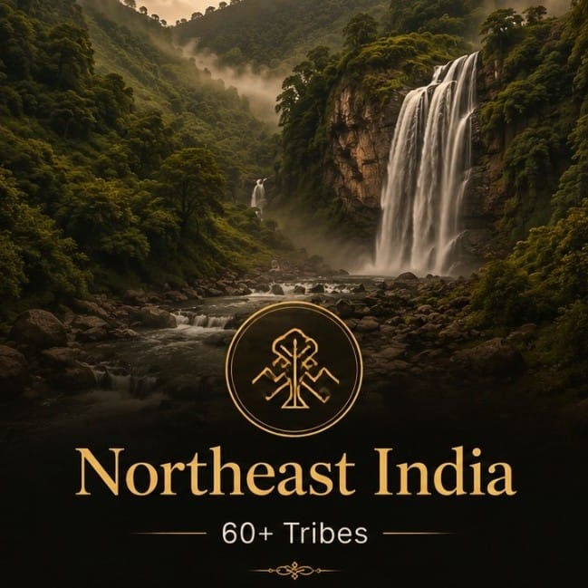

Battle of Saraighat Explorer
On the Brahmaputra at Saraighat, the Ahom Kingdom's river navy — led by the legendary Lachit Borphukan — smashed the Mughal Empire's invasion fleet and turned the tide of Aurangzeb's eastward ambitions. It was one of the great naval victories of Indian history.
The Brahmaputra Stands in the Way
In 1662, the Mughal general Mir Jumla had marched into Assam and forced the Ahom kingdom to accept Mughal supremacy. But the Ahoms, masters of the Brahmaputra and its tributaries, never accepted defeat. In 1667, King Chakradhwaj Singha resolved to expel the Mughals and reclaim Guwahati.
The task fell to Lachit Borphukan, the Ahom commander-in-chief of the western frontier. For years the two empires had tested each other along the river. In 1671, Emperor Aurangzeb dispatched a vast army under Rajput general Ram Singh I to crush the Ahoms once and for all — and at the narrows of Saraighat, the Brahmaputra itself became a battlefield.
🏛️ At a Glance
- 1671 CE — Fought on the Brahmaputra River at Saraighat, near Guwahati, Assam.
- Decisive Ahom Victory — The Mughal invasion of Assam was thrown back.
- Naval Warfare — A river battle won by boats, terrain, and tactics, not numbers.
- Lachit Borphukan — The Ahom commander whose name became a legend of Assamese resistance.
The Commanders
Two commanders, two armies, and one river: the Ahom defenders under Lachit Borphukan against Ram Singh I's Mughal expeditionary force.
Ahom Kingdom
- Commander — Lachit Borphukan
- Sovereign — King Chakradhwaj Singha
- Strength — A compact army and river flotilla, numbering in the low tens of thousands
- Tactics — Naval hit-and-run, terrain advantage, and the narrow channel at Saraighat
Mughal Empire
- Commander — Ram Singh I of Amber
- Sovereign — Emperor Aurangzeb
- Strength — Tens of thousands of troops, heavy cavalry, and a large river fleet
- Tactics — Overwhelming numbers and conventional battle, unsuited to the narrow river
Why it mattered: Ram Singh I brought a formidable, battle-hardened force — yet on the Brahmaputra, where the Ahom navy had generations of riverine experience, numerical superiority could not be brought to bear. Saraighat proved that in naval warfare, the river itself is the general.
⚔️ The Verdict of Saraighat
- Decisive Ahom Victory — The Mughal fleet was routed and the invasion of Assam collapsed.
- Mughal Retreat — Ram Singh I withdrew beyond the Manas River, abandoning Guwahati.
- Guwahati Secured — The gateway to the Brahmaputra valley remained in Ahom hands.
- Expansion Halted — Aurangzeb's eastward expansion was checked for a generation.
Why Saraighat Was the Turning Point
Saraighat was one of the rare occasions when a smaller Indian power decisively defeated a Mughal expeditionary force in open war. It ended the Mughal ambition of conquering Assam and preserved the Ahom kingdom for another century and a half, until the Burmese invasions of the 19th century.
More than a military victory, Saraighat became the symbol of Assamese identity — proof that a determined people defending their homeland could overcome the mightiest empire of the age.
The Legacy of Saraighat
The echoes of Saraighat carried far beyond the riverbanks of 1671.
Lachit Borphukan
Remembered as Assam's greatest military hero, Lachit is honoured every year on Lachit Divas (24 November) — a day of pride for the people of the Brahmaputra valley.
The Ahom Kingdom Endures
The victory secured the Ahom kingdom's independence, which lasted until the Burmese invasions (1817–1826) and the subsequent annexation of Assam by the British East India Company.
A Naval Classic
Saraighat is studied as a textbook example of naval defence using terrain, intelligence, and riverine mobility against a numerically superior conventional force.
📜 Lasting Implications
Symbol of Resistance: Today, the site of the battle is marked by the Lachit Borphukan Maidam in Guwahati — a monument to the general who, even in the last days of his life, urged his soldiers to remember that "a warrior who fights for his motherland never dies."
Chronology of the Battle of Saraighat
From Mughal invasion to the great river victory — the road to Saraighat.
Mir Jumla Invades Assam
Mughal general Mir Jumla marches into the Ahom kingdom, captures the capital Garhgaon, and occupies much of the Brahmaputra valley.
Treaty of Ghilajharighat
Forced to sue for peace, the Ahoms cede Guwahati and lower Assam to the Mughals and agree to pay tribute — a humiliation the kingdom never accepts.
Guwahati Recaptured
King Chakradhwaj Singha appoints Lachit Borphukan commander of the western frontier. The Ahoms storm Guwahati and drive the Mughal garrison back across the Manas.
Aurangzeb Strikes Back
Emperor Aurangzeb dispatches Ram Singh I of Amber with a large army and a powerful river fleet to reconquer Assam and punish the Ahoms.
The Battle of Saraighat
In the narrows of the Brahmaputra at Saraighat, the Ahom flotilla and riverbank archers rout the Mughal fleet. Ram Singh I is forced to retreat.
Death of Lachit Borphukan
Lachit Borphukan dies in April 1672, shortly after King Chakradhwaj Singha. His legacy lives on as the enduring symbol of Assamese resistance.
The River Remembered
A glimpse of the Brahmaputra battlefield, the gateway of Guwahati, and the region the Ahoms defended.



📚 References & Further Reading
- Gait, Edward (1906). A History of Assam. Thacker, Spink & Co.
- Baruah, S. L. (1985). A Comprehensive History of Assam. Munshiram Manoharlal.
- Bhuyan, Surya Kumar (1947). Lachit Borphukan and His Times. Government of Assam.
- Gogoi, Padmeshwar (1968). The Tai and the Tai Kingdoms. Gauhati University.
- National Council of Educational Research and Training (NCERT). Our Pasts — II (Class VII History).
- Encyclopaedia Britannica. Battle of Saraighat.